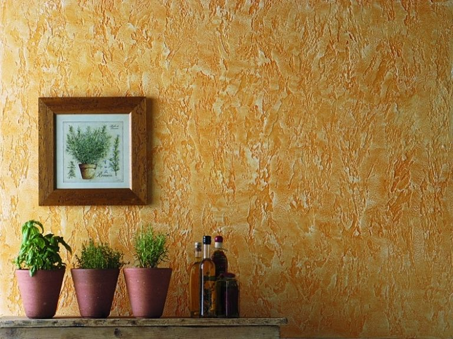

Мастер по декоративной штукатурке
Обои и краска на стенах стали настолько банальны, что пора задуматься о новых идеях для дизайна. Отделка декоративной штукатуркой будет отличной идеей для оформления любого помещения. При выборе следует учесть множество нюансов возможностей и особенностей сухих смесей.
Преимущества материала
Среди плюсов можно выделить основные характеристики:
1. В умелых руках это быстрый способ отделки стен и потолка.
2. Хорошо выравнивает поверхности, скрывая дефекты.
3. Отлично подчёркивает дизайнерские задумки, позволяя создавать интересную фактуру.
4. В сочетании с необычным освещением может подчеркнуть стиль и вкус хозяина квартиры.
5. Творческая самореализация.
6. Неограниченные возможности для эксклюзива.
7. Имитирует дорогие материалы, например, такие, как облицовочный камень и дерево.
8. Некоторые виды штукатурки влагостойкие и имеют устойчивость к плесени.
9. В ней не могут заводиться насекомые и другие живые организмы.
10. Долговечность материала в сочетании с простым уходом в ходе эксплуатации даёт ещё дополнительные очки к выбору именно этого материала.
Стены под штукатуркой «дышат», создавая оптимальный микроклимат в помещении. А чтобы все преимущества сработали как надо, без переделок по неопытности, стоит обратиться к услугам специалиста с опытом работы. Мастер по декоративной штукатурке в Нижнем Новгороде сориентирует, сколько её понадобиться и какую марку выбрать, чтобы и сэкономить, и не выбрать случайно некачественный материал.
Состав смесей
При выборе в строительном отделе неопытный человек быстро теряется среди образцов. Мастер по декоративной штукатурке сориентирует в составе и подберёт то, что действительно поможет воплотить изначальную идею в жизнь. По виду декоративные штукатурки делятся на 3 большие группы:
• Венецианская – идеальна для интерьера, имитирует и повторяет красоту мрамора, но требует навыка нанесения.
• Фактурная – имитация таких материалов как бетон, камень, дерево, очень красиво и интересно смотрится. Так же подходит для скрытия неровностей на поверхности.
• Декоративные краски – дают гладкие структуры, имитация шелка, песка. Просты в нанесении.
Для создания рельефа можно смешивать с различными добавками. Именно эта особенность позволяет создавать уникальные дизайнерские решения, способные оживить даже самую стандартную хрущёвку. Каждая разновидность обладает своим набором преимуществ и характеристик. Какие-то смеси можно использовать во влажной зоне, какие-то – нет. Конечно, для выбора лучше обратиться к специалисту, который подберёт материалы в точности с запросами клиента, не позволяя совершить техническую ошибку.
Особенности нанесения
Понадобится много специального инструмента: тёрки и полутёрки, шпатели разных размеров, кисти, дрель для размешивания, кельма… И это ещё не всё! Большой список, который не у каждого человека просто так завалялся в чулане. Это ещё если не брать в расчёт подготовительный этап, когда нам понадобится наждачная бумага, отвесы, армирующая сетка, грунтовка и прочие полезные приспособления для нанесения декоративной штукатурки.
Этапы работы мастера декоративной штукатурки
1.Необходимо ободрать стены, если ранее были оклеены обои, и выровнять поверхность для последующих этапов.
2.Тщательно перемешать штукатурку перед нанесением. Расход зависит от материала, а слишком много заготавливать нельзя – засохнет.
3.Аккуратно нанести на стену, растягивая шпателем по поверхности. Важно соблюдать правильную толщину. Сделаешь тонко – будет просвечивать грунтовка. Сделаешь толсто – будет долго сохнуть и деформироваться.
4.Формирование рисунка начинается практически сразу с момента нанесения на поверхность стены.
5.Окрашивание выбранным тоном. Выбор цвета и колеровка у нас производится компьютерным методом.
Каждый этап имеет свои особенности, поэтому для экономии времени и сил проще найти мастера, который оказывает услуги декоративной штукатурки в Нижнем Новгороде. Опытный специалист осмотрит помещение, изучит дизайн-проект и подскажет, что и сколько купить, а потом сделает работу максимально быстро и эффективно.